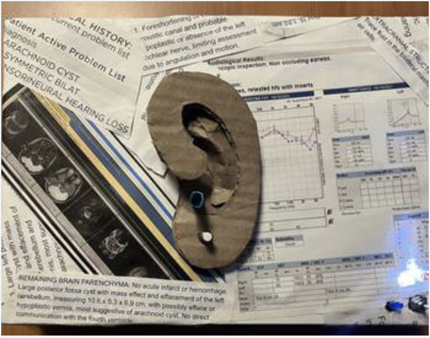
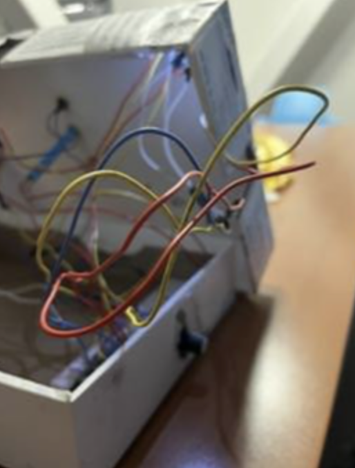

Faded Frequencies



A visual exploration of sound and memory through a series of interconnected pieces. This work examines how frequencies fade and transform over time, creating a dialogue between sound, memory, and visual representation.
The series consists of six pieces, each capturing a different aspect of how frequencies interact with our perception and memories. Through various visual techniques and compositions, the work explores:
- The relationship between sound and visual form
- The transformation of frequencies over time
- The intersection of memory and sensory experience
- The visual representation of audio phenomena
Each piece in the series builds upon the others, creating a comprehensive exploration of how we perceive and remember sound through visual means.
Back to Works